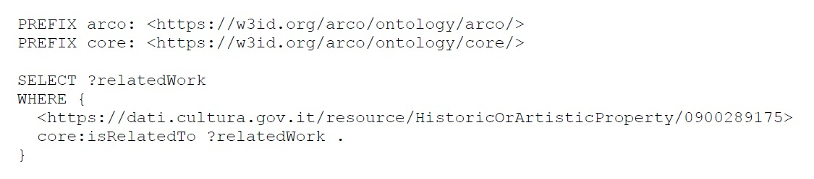
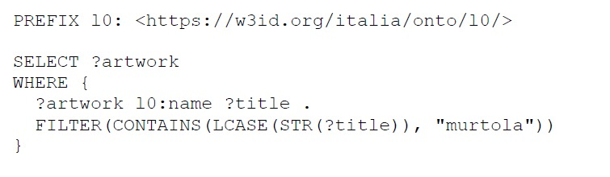
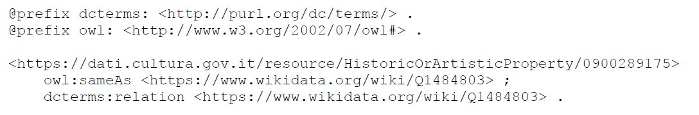
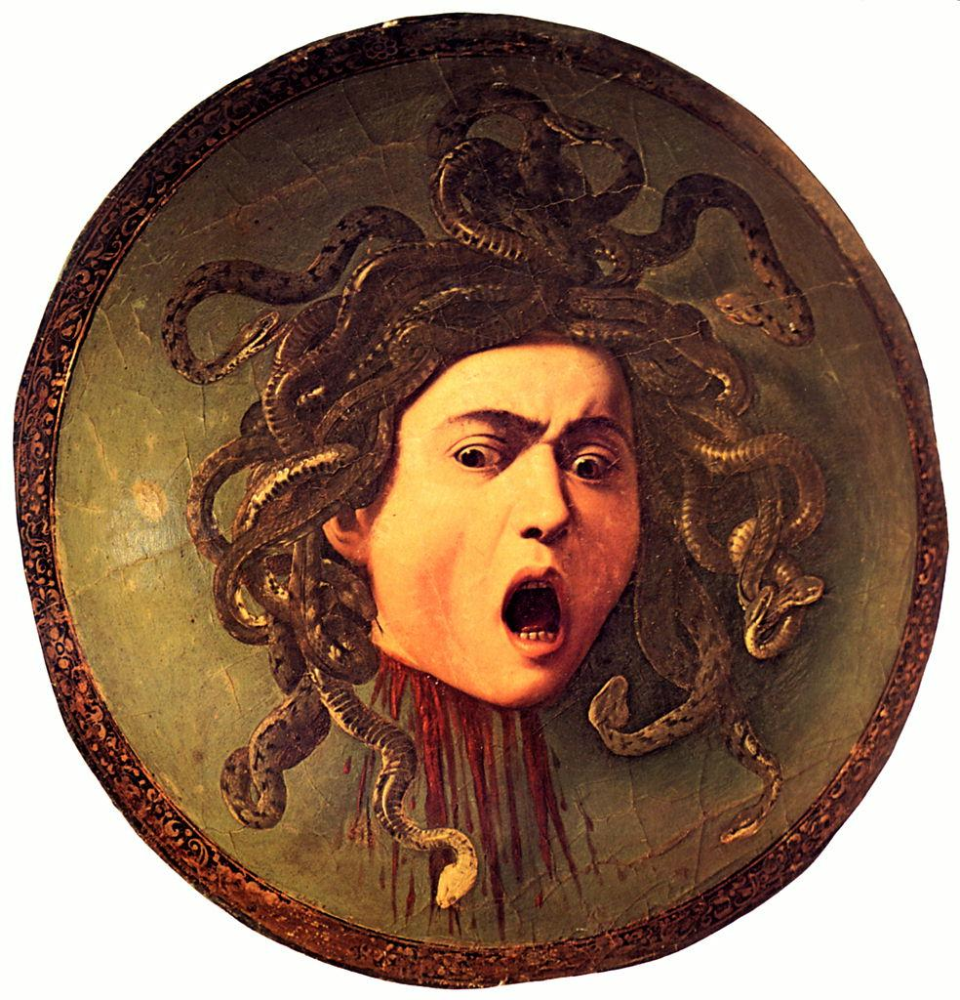
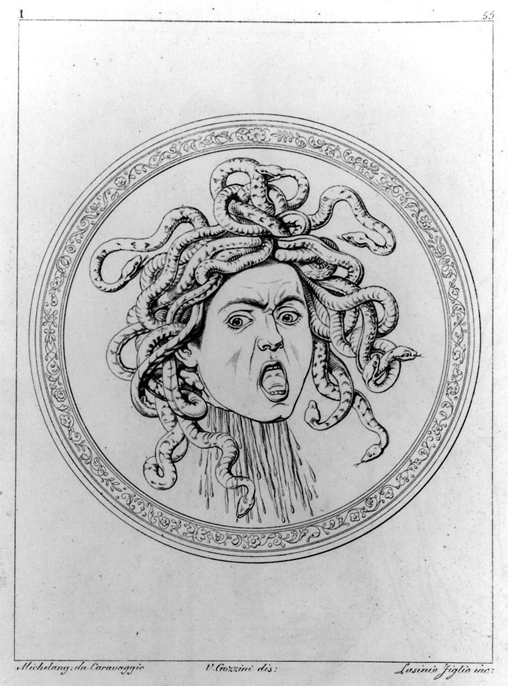
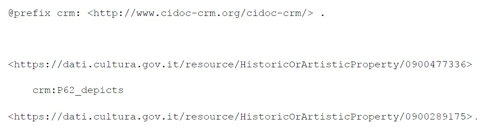
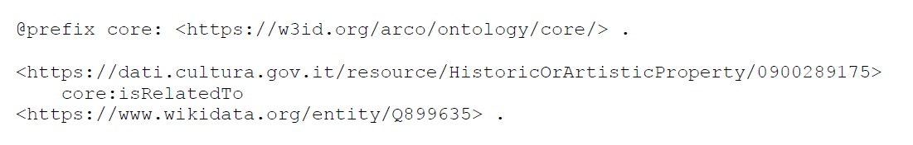
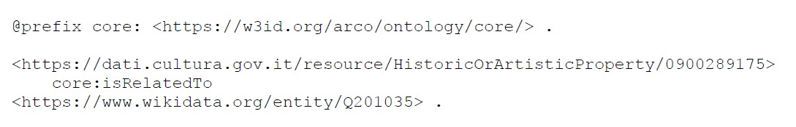
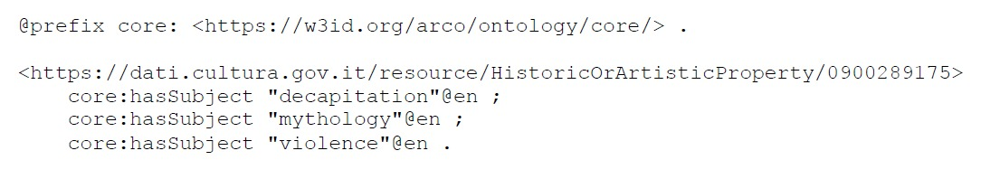

IDENTIFYING GAPS + RDF TRIPLES
FIRST GAP
During the analysis of the page, we noticed an important missing piece of contextual information. The resource only describes the famous version of the painting preserved at the Uffizi Gallery, but it does not mention that Caravaggio actually created two versions of Medusa.
The first version is known as Medusa di Murtola, while the second and more famous version is the one at the Uffizi. It was named after the poet Gaspare Murtola, who wrote of Medusa: “flee, for if your eyes are petrified in amazement, she will turn you to stone”. It measures 48 × 55 cm and is signed Michel A F (Michel Angelo Fecit, meaning “Michel Angelo made this”). This work is privately owned.
The second version of the painting is known as Medusa (Testa di Medusa). It is slightly larger, measuring 60 × 55 cm. Although the work is not signed or dated, it is commonly dated to 1597 and is preserved at the Uffizi Gallery.
This absence represents an information gap because the resource lacks historical and contextual completeness. Users consulting the page may incorrectly assume that only one version of the artwork exists. To verify this gap, we used SPARQL queries on the ArCo dataset.
The first query checks whether the resource is linked to other related versions or artworks.

This query searches for relationships connecting the artwork to other related cultural properties. The result is empty, confirming that the ArCo resource does not explicitly reference another version of Medusa.
In this second query we will investigate whether there are references to the Murtola version specifically.

The query produces no results.
This means that the Medusa di Murtola is absent from the dataset, at least under this naming convention.
To address this limitation, the dataset can be enriched by linking the ArCo resource to an external authoritative source describing the missing artwork.
The missing artwork (Medusa di Murtola) is documented in external knowledge bases such as Wikipedia: https://en.wikipedia.org/wiki/Medusa_(Caravaggio)
We will be connecting the two resources. This is achieved using RDF triples expressed in Turtle syntax, which is the standard format for writing RDF data in a human-readable way.

In this RDF representation, the subject is the Caravaggio’s Medusa preserved at the Uffizi Gallery. The object corresponds to the Wikipedia site in which the Medusa di Murtola, an earlier version of the same iconographic subject, is mentioned.
The property owl:sameAs is used to express a strong alignment between two entities described in different datasets. Although in strict semantic terms it indicates identity, in this context it is used as a cross-dataset linking mechanism to suggest a high degree of correspondence between related cultural heritage records.
In addition, dcterms:relation is used to express a broader and less strict historical and conceptual relationship. This allows the model to capture not only identity-level alignment but also contextual and art- historical association between the two works.
SECOND GAP + RDF TRIPLE
This time, we will be examining two cultural heritage resources that are currently not connected, despite having a clear historical and iconographic relationship. The two resources are the Testa di Medusa by Caravaggio
https://dati.cultura.gov.it/lodview-arco/resource/HistoricOrArtisticProperty/0900289175.html

…and a printed reproduction in Imperiale et Royale Galerie de Florence
https://dati.cultura.gov.it/lodview-arco/resource/HistoricOrArtisticProperty/0900477336.html

The second resource is a printed illustration contained in the publication Imperiale et Royale Galerie de Florence, a historical volume dedicated to reproducing artworks from Florentine collections. Although the print clearly reproduces or depicts the painting, the two resources are currently disconnected inside the ArCo graph. This means that users cannot navigate from the original artwork to its printed reproductions, and SPARQL queries will not retrieve documentary representations of the artwork;
To express this relationship, we could use the property:
crm:P62_depicts
This property indicates that one resource visually depicts another entity. The print resource should therefore depict the original painting.

In this triple the subject is the printed illustration from Imperiale et Royale Galerie de Florence; the predicate crm:P62_depicts expresses a relationship; the object is Caravaggio’s Testa di Medusa, so the triple formally states that the print depicts the original artwork.
THIRD GAP
During the analysis of the page, we noticed that the resource is not semantically connected to other artworks by Caravaggio that share similar themes, iconography, and artistic characteristics.
Medusa is strongly related to other paintings by Caravaggio that represent violence, decapitation, dramatic realism, and psychological tension, such as Judith Beheading Holofernes and David with the Head of Goliath These artworks belong to the same artistic and thematic universe and are often studied together in art history because they explore similar subjects related to death, fear, heroism, and human emotion. Users consulting the resource may understand the artwork in isolation, without recognizing its relationship to other important works by the same artist.
To verify this gap, we used SPARQL queries on the ArCo dataset.
We already know that the Medusa resource is not linked to other related artworks through semantic relationships thanks to our previous SPARQL query. The ArCo resource does not explicitly reference any thematically related works by Caravaggio. A possible solution to this information gap would be the addition of RDF triples that semantically connect Medusa with other thematically related artworks.
For example, the property core:isRelatedTo could be used to establish relationships between the paintings:

Another relationship could connect the artwork to Judith Beheading Holofernes:

Additional RDF triples could also enrich the thematic interpretation of the artwork:
